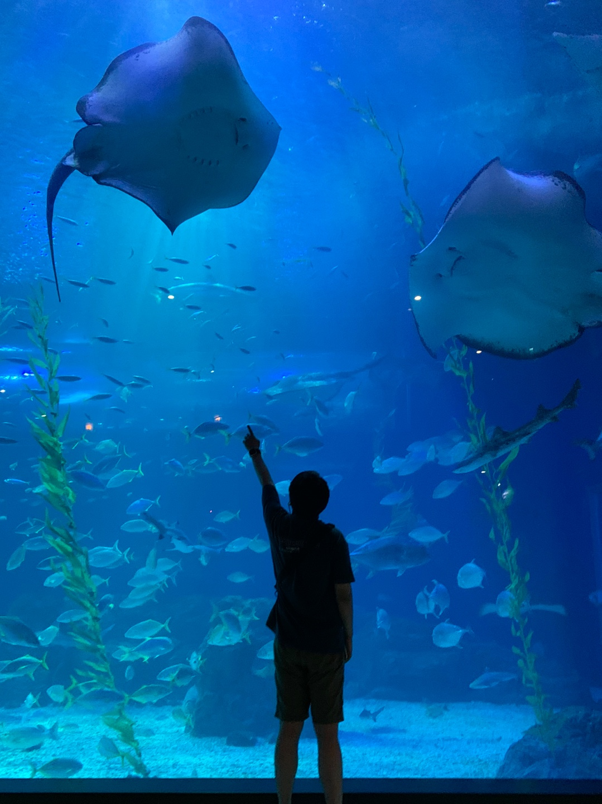

Experience
5+ years
Publisher
웹퍼블리셔로 근무하며 축적한 웹 콘텐츠 제작 역량과 더불어 원활한 소통 능력과 문제 해결 능력을 꾸준히 길러왔습니다.
신규구축, 리뉴얼 프로젝트 참여 경험이 많고 특히, 금융권 프로젝트에 참여 경험이 많습니다.
성공적인 프로젝트를 위해서 기획자, 디자이너, 개발자분들과 원할한 소통도 가능합니다.
신규구축, 리뉴얼 프로젝트 참여 경험이 많고 특히, 금융권 프로젝트에 참여 경험이 많습니다.
성공적인 프로젝트를 위해서 기획자, 디자이너, 개발자분들과 원할한 소통도 가능합니다.